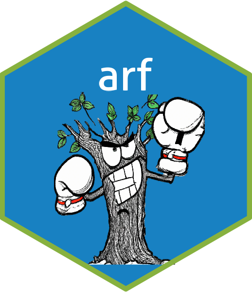

Generate synthetic data by sampling from the leaves of a random forest
Source:R/sample_from_leaves.R
sample_from_leaves.RdDraws synthetic samples by sampling, for each observation, a leaf from the
forest and then drawing each feature independently (marginally) from the real
observations that fall into that leaf. This is the intra-leaf sampling step
used internally by adversarial_rf to generate synthetic data
during the adversarial loop, exposed here as a stand-alone function.
Usage
sample_from_leaves(
arf,
x_real,
params = NULL,
round = TRUE,
factor_cols = NULL,
lvls = NULL,
prep = TRUE
)Arguments
- arf
A trained ARF, as returned by
adversarial_rf(arangerobject).- x_real
Data whose intra-leaf structure is used for sampling, typically the data the forest was trained on.
- params
Optional circuit parameters as returned by
forde. If supplied, the synthetic data is post-processed with the same routine used byforge: variable types and factor levels are restored, continuous variables are rounded to their observed precision (seeround), and the class of the original input is reinstated. IfNULL, a minimally processeddata.tableis returned with factor columns encoded as character, matching the representation used internally byadversarial_rf.- round
Round continuous variables to their maximum precision in the real data? Only relevant when
paramsis supplied.- factor_cols
Optional logical vector flagging the factor columns of
x_real. Computed fromx_realifNULL. Mainly for internal use to avoid recomputation.- lvls
Optional list of factor levels for the factor columns of
x_real. Computed fromx_realifNULL. Mainly for internal use.- prep
Prepare
x_realwith the internal pre-processing routine before sampling? Set toFALSEifx_realis already prepared (internal use).
Value
A dataset of nrow(x_real) synthetic samples. When params
is supplied, its class and column types match the original data; otherwise a
data.table with factor columns encoded as character.
References
Watson, D., Blesch, K., Kapar, J., & Wright, M. (2023). Adversarial random forests for density estimation and generative modeling. In Proceedings of the 26th International Conference on Artificial Intelligence and Statistics, pp. 5357-5375.
Examples
arf <- adversarial_rf(iris)
#> Iteration: 0, Accuracy: 77.36%
#> Iteration: 1, Accuracy: 43.62%
# Minimally processed output (factors as character)
x_synth <- sample_from_leaves(arf, iris)
# Fully post-processed output, consistent with forge()
psi <- forde(arf, iris)
x_synth <- sample_from_leaves(arf, iris, params = psi)